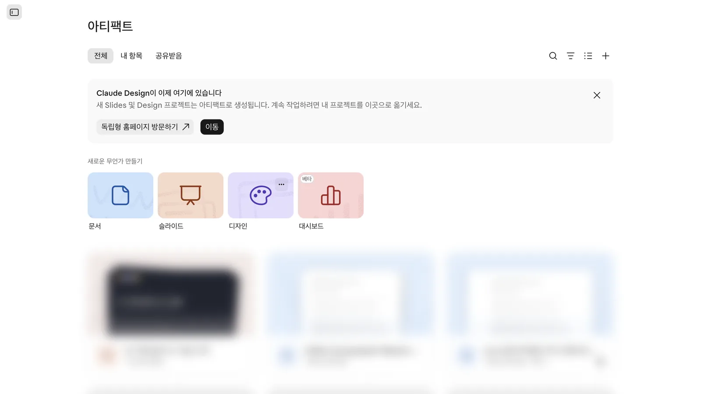
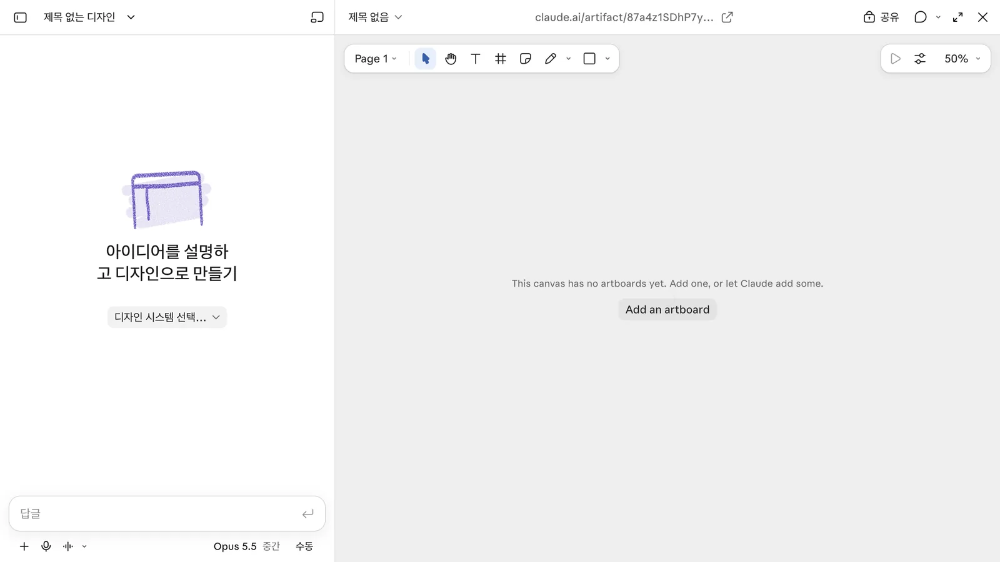
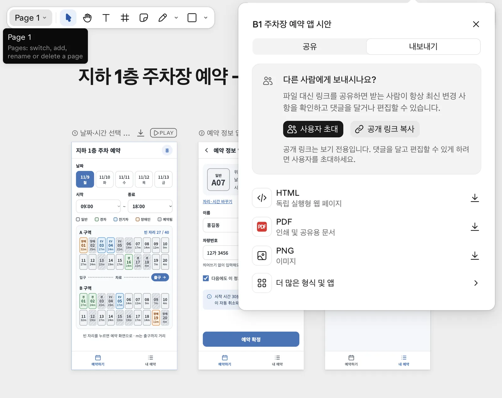

Claude Design으로 화면을 정하고, Claude Artifacts로 동작을 붙인 뒤, Claude Code로 서버 규칙과 테스트를 구현합니다. 이 장에서는 원문의 도구 비교와 2026년 11월 7일 실행 기록을 바탕으로 작업 공간과 전달 파일을 살펴봅니다.
무엇을 · 왜#
같은 Claude를 사용해도 캔버스에서 화면을 고치는 일과 프로젝트 폴더의 코드를 고치는 일은 다릅니다. 이번 실습은 사내 지하 1층 주차장 예약 앱을 세 단계로 만듭니다. 각 단계에서 결과를 직접 확인하고, 다음 단계에 필요한 파일을 남깁니다.
도구 비교의 출발점은 비젠소프트 IT 인사이트 685번, 2026년 6월 27일 글 「Claude로 화면·코드 생성, Artifacts·Claude Code·Claude Design 뭐가 다를까?」입니다. 원문은 Artifacts를 스케치북, Claude Design을 디자인 스튜디오, Claude Code를 공장에 비유합니다.
원문에서 아이디어 탐색은 Artifacts, 디자인 완성과 팀 공유는 Claude Design, 실제 제품 구현은 Claude Code의 역할입니다. 채팅에서 와이어프레임을 HTML로 만들어 눌러 본 뒤 캔버스에서 디자인을 다듬는 순서입니다.
이번 교재는 디자인을 먼저 정하고 MVP에서 동작을 붙이는 순서로 진행합니다. 원문의 비교를 실제 작업에 적용하면서, 화면의 모양을 정하는 단계와 데이터를 주고받는 단계를 나누어 확인하기 위해서입니다.
원문도 Artifacts는 프로덕션 코드용이 아니며 Claude Code에는 터미널 이해가 필요하다고 밝힙니다. Claude Design은 Figma를 보완하는 도구로 소개하고, 가격과 사양이 빠르게 바뀌며 ROI 수치는 참고용이라는 한계도 적었습니다. 이 장에서는 원문의 소개와 이번에 직접 실행한 결과를 구분합니다.
세 도구 비교#
| 단계 | 도구 | 작업하는 곳 | 이번에 만든 결과 | 다음 단계로 넘기는 것 |
|---|---|---|---|---|
| 디자인 | Claude Design | 브라우저 캔버스 | 아트보드 3장과 클릭 프로토타입 | PNG·HTML |
| 동작하는 MVP | Claude Artifacts | 채팅과 앱 패널 | 공유 저장소와 AI 추천이 붙은 앱 | HTML 코드 |
| 실제 구현 | Claude Code | 내 PC의 프로젝트 폴더 | React(Vite)·Express·SQLite 앱과 테스트 | git 저장소 |
디자인에서는 제목을 직접 고치거나 배치도의 특정 위치에 댓글을 붙입니다. 화면이 어떻게 이어지는지 재생할 수 있지만, 이번 프로토타입은 A20을 눌러도 다음 화면에 A07이 나왔습니다. 화면 연결만으로는 선택한 데이터가 전달된다고 볼 수 없습니다.
MVP에서는 PNG와 자리 정보를 함께 전달합니다. 추천한 A03과 날짜·시간이 예약 화면에 이어지고, 확정한 자리가 배치도에 반영됩니다. 이때 로그인과 공유 권한은 플랫폼에 묶여 있고, 중복 예약 방지는 브라우저의 잠금에 기대고 있습니다.
Claude Code에서는 같은 화면과 흐름을 이어받되 서버와 DB에 예약 규칙을 둡니다. 사번 로그인, 본인 예약 취소, 감사 기록, 서버의 Claude API 호출, 자동 테스트를 더합니다. 두 사람이 동시에 확정하는 상황도 화면과 기록으로 확인합니다.
11월 7일 확인한 변화#
6월 원문과 달리 시작 위치부터 바뀌었습니다. claude.ai의 아티팩트 화면에는 「Claude Design이 이제 여기에 있습니다」라는 배너가 보였습니다. 새 Slides·Design 프로젝트는 아티팩트로 생성되고, 계속 작업하려면 프로젝트를 이곳으로 옮기라는 안내입니다.

| 확인한 위치 | 당시 보인 내용 | 실습에서 한 선택 |
|---|---|---|
| 독립 Claude Design | 12월 14일에 이동한다는 안내 | 아티팩트 안의 디자인 카드에서 시작 |
| 무료 계정의 독립판 | Pro·Max·Team·Enterprise 구독 대상 안내 | 무료 계정에서는 아티팩트 안 디자인을 확인 |
| 아티팩트 안 디자인 | 무료 계정에서도 디자인 생성 가능 | 실제 녹화는 유료 Ultra 계정 사용 |
| 무료 계정 내보내기 | 「현재 플랜에는 공유 기능이 포함되어 있지 않지만, 사본을 내보낼 수 있습니다.」 | 단계 사이에 파일 전달 |
| 내보내기의 앱 연결 목록 | Canva·Gamma·Lovable·Miro·Replit·Vercel·v0 등 | Claude Code 항목이 없어 파일로 준비 |
무료 계정 리허설에서는 와이어프레임 3화면을 만드는 데 54초가 걸렸고, 남은 한도 10%를 모두 사용해 마무리 중 멈췄습니다. 이는 무료 계정으로 전체 실습이 가능하다는 뜻이 아닙니다. 실제 녹화의 디자인·MVP는 Opus 5.5, Claude Code는 Sonnet 5.5로 진행했습니다.
디자인 카드를 누르면 유료 계정에서는 바로 빈 캔버스가 열렸습니다. 왼쪽에는 「아이디어를 설명하고 디자인으로 만들기」, 오른쪽에는 「This canvas has no artboards yet. Add one, or let Claude add some.」가 표시됩니다.

캔버스에는 선택·손·텍스트·아트보드·노트·연필·사각형 도구가 있습니다. 재생과 속성, 확대도 이곳에서 다룹니다. 정적인 아트보드만 만든 상태에서는 재생을 눌러도 「Static artboards」 목록만 나옵니다. 화면을 눌러 이동하려면 클릭 프로토타입을 따로 요청해야 합니다.
이 교재의 메뉴와 플랜 설명은 2026년 11월 7일의 관찰 기록입니다. 실습할 때는 자신에게 보이는 안내와 권한을 확인하세요.
단계 사이에 넘긴 실제 파일#
이번에는 링크 공유보다 파일로 단계별 결과를 보존했습니다. 유료 계정의 공유 링크는 받는 사람이 최신본을 볼 수 있게 하지만, 파일은 다음 작업에 무엇을 전달했는지 확인하는 기준이 됩니다.
| 넘기는 단계 | 실제 파일 | 쓰임 |
|---|---|---|
| 디자인 → MVP | design-1.png·design-2.png·design-3.png |
화면 모양과 흐름 전달, 각각 780×1688 |
| 데이터 → MVP | 주차면.csv |
40면의 자리 유형과 거리 등 실제 입력 데이터 |
| 디자인 보관 | design.html |
아트보드를 묶은 단일 HTML |
| MVP → Claude Code | mvp.html |
42KB·656줄, 동작하는 화면과 코드 전달 |
| 데이터 → Claude Code | 주차면.csv·2026-10_주차예약.csv |
주차면과 지난 예약, 직원 코드의 초기 데이터 |
디자인 내보내기에는 HTML·PDF·PNG·더 많은 형식 및 앱이 표시됩니다. PNG는 전체 아트보드를 선택해 ZIP으로 받고 압축을 풉니다. 일반 MVP 아티팩트의 내보내기에는 HTML·Markdown·PDF가 표시되므로, 다음 구현에 사용할 HTML을 받습니다.

Claude Code에 전달할 때는 파일을 다음 두 폴더에 나눕니다. 설정 파일을 포함한 전체 구조는 Claude Code로 실제 구현에서 준비합니다.
handoff/
design-1.png
design-2.png
design-3.png
design.html
mvp.html
data/
주차면.csv
2026-10_주차예약.csv
계획서에는 design.html을 읽지 않았고 시안 PNG와 MVP를 기준으로 삼았다고 명시되어 있습니다. 폴더에 넣어 둔 파일이 모두 구현의 근거로 사용된 것은 아닙니다. 완료 설명과 계획서에서 실제로 읽은 자료도 확인하세요.
단계가 끝날 때 확인할 것#
| 단계 | 확인할 질문 | 이번 실행의 근거 |
|---|---|---|
| 디자인 | 어떤 화면으로 이동하나요? 선택한 자리도 이어지나요? | A20을 눌렀지만 예약 정보는 A07 |
| MVP | 선택과 저장 결과가 화면에 반영되나요? | A03 예약 후 「나」 표시와 빈 자리 39/40 |
| 실제 구현 | 동시에 요청해도 규칙을 지키나요? | 동시 20건 중 성공 1건, 충돌 19건 |
| 사용 확인 | 화면에서 본 결과가 기록에도 남나요? | 같은 초의 A04 생성과 충돌 기록 |
AI의 완료 설명에는 가정한 값과 시험하지 못한 동작도 포함됩니다. 디자인에서 표시한 출구 거리는 가정한 값이고, MVP 생성 직후에는 실제 저장·동시 예약·추천 호출을 시험하지 못했다고 밝혔습니다. 서버 구현에서도 실제 Claude API 호출은 키가 없어 가짜 응답으로만 검증했습니다.
이 차이를 확인하며 진행하면 필요한 단계에서 멈출 수 있습니다. 화면과 문구 합의가 목적이면 디자인, 팀 안에서 간단한 데이터를 다루려면 MVP를 검토합니다. 서버의 동시성·기록·인증·테스트가 필요하면 실제 구현으로 넘어갑니다. 다음 디자인 장에서 첫 화면 3장을 만듭니다.